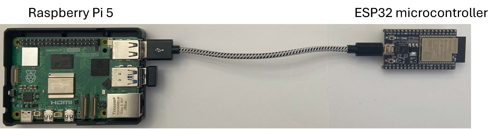

2025 · ARCHITECTURE · MODELING · HARDWARE PROTOTYPE
Green-Light Security for AI Computing
Toward secure, energy-efficient, and sustainable AI infrastructure.
THE QUESTION
Must strong protection impose its full cost on every memory access?
Modern AI systems require strong reliability and integrity, but protection metadata and correction mechanisms consume bandwidth, capacity, energy, and latency even when errors are rare.
Green-Light Security asks whether protection can instead be organized around the common case: keep lightweight safeguards continuously active, while invoking expensive corrective work only when necessary.
THE IDEA
Separate common-path integrity from rare reliability correction.
The architecture keeps coarse-grained integrity verification in the fast memory tier while moving error-correction parity to a lower-cost off-path tier. Normal reads remain on the fast path. If verification fails, the system retrieves parity and invokes stronger correction.
Keep inexpensive safeguards always on. Move rare, expensive corrective work off the critical path.
THE MODEL
Protection granularity creates a systems tradeoff.
Larger protection domains amortize MAC and ECC metadata over more user data, lowering steady protection overhead. But larger blocks also contain more bits and therefore increase the probability that a read invokes the expensive correction path.
The mathematical formulation combines reliability, integrity, memory cost, decoding throughput, and off-path bandwidth to identify operating regions in which the fast memory path remains unconstrained by protection work.
HARDWARE PROTOTYPE
Testing the fast-path / slow-path separation on physical hardware.
A Raspberry Pi 5 represents the fast memory tier and performs local integrity checks. An ESP32 represents the off-path reliability tier and is contacted only when correction is triggered.

RESULT
Protection does not have to be monolithic.
Across the analytical model, simulation, and prototype, the work shows that a tiered protection architecture can reduce steady protection overhead while reserving expensive correction for uncommon fault events.
More importantly, the project exposed a second systems question: once expensive recovery becomes rare and conditional, how should the fallback resource itself be provisioned?